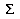

| [zurück] | [Hauptmenü] | [weiter] |
OpenOffice.org Formel
05 - Sonderzeichen
Viele Formeln verwenden besondere Zeichen, um
sich von den üblichen Variablenbuchstaben des Alphabets
abzuheben. Häufig sind das griechische Buchstaben; es gibt
aber noch mehr Möglichkeiten. Allgemein kann OpenOffice.orgs
Formelprogramm diese natürlich anzeigen, sofern die
benötigten Zeichen in einer Schriftart zur Verfügung
stehen. Für häufig verwendete Zeichen muss man aber im
Normalfall nichts über installierte Schriftarten wissen - es
sollte alles von Anfang an nach der Installation
funktionstüchtig vorhanden sein.
Schreiten wir also zur Tat und hier mögliche Schritte um ein
Sonderzeichen einzufügen:
Das  -Symbol in der Leiste Werkzeuge drücken - es erscheint der Dialog zum Sonderzeicheneinfügen: Man wählt die Kategorie des Sonderzeichens, klickt es an und drückt auf Übernehmen.
Es erscheint aber nicht das Sonderzeichen, sondern wieder ein Kommando, das dem Formelprogramm sagt, welches Zeichen man gewählt hat. Wieso?- Das ist die zweite und etwas schnellere Möglichkeit: man
kann mit
%<Sonderzeichenname>geschwind das Sonderzeichen eingeben, ohne einen Dialog zu benötigen. Bei häufig verwendeten Symbolen ist das eine enorme Arbeitsersparnis.
Möchten Sie auch andere Sonderzeichen als diese einfügen, lesen Sie das bitte in der dieser FAQ nach.
| [zurück] | [Hauptmenü] | [weiter] |
© Copyright 2003, Harald Schilly
This documentation is part of "Erste Schritte: OpenOffice.org Textdokument", which is released
under the terms of the PDL.
For full copyright and license info read the index page.